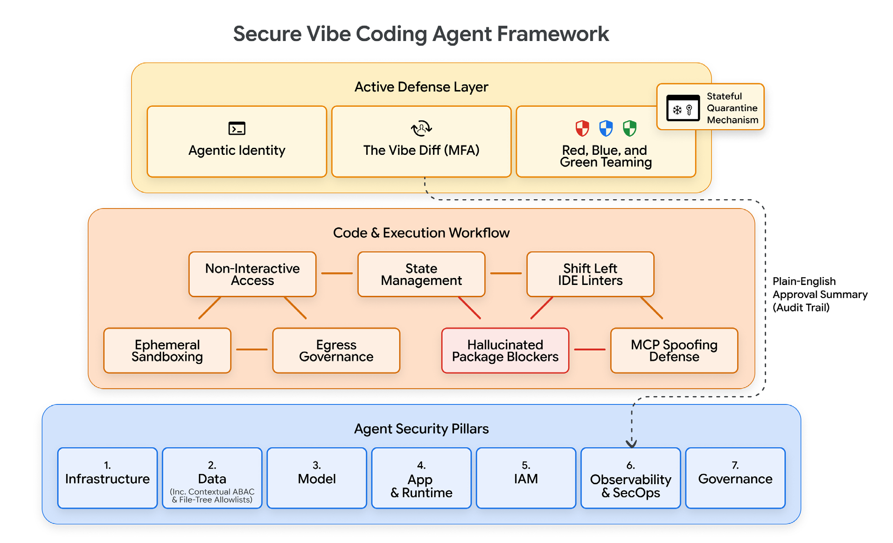
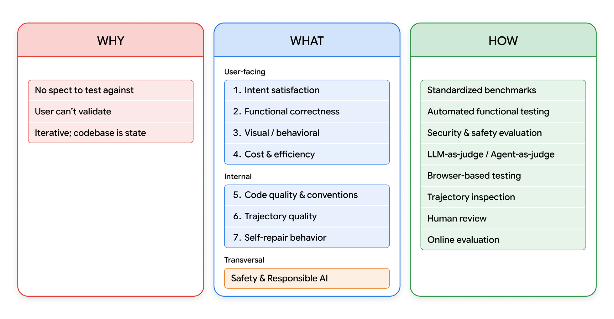
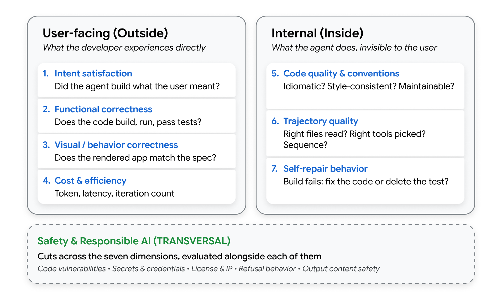
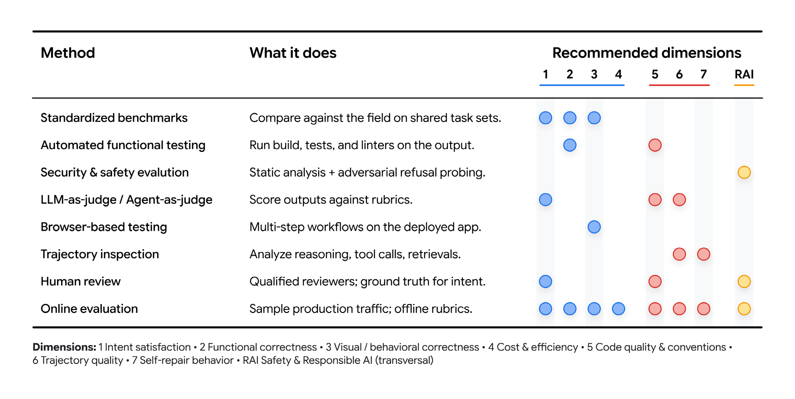

فهرست مطالب
تبدیل مدلهای هوش مصنوعی به عاملهای سازمانیِ امن و بهشدت همراستا، از راه اعتماد پیوسته و ارزیابی دقیق، بیش از هر زمان دیگری اهمیت دارد.
مقدمه
مهندسی نرمافزار مهمترین دگرگونی خود را از زمان معرفی زبانهای برنامهنویسی سطحبالا از سر میگذراند. عمیقترین جابهجایی، گذار از نوشتن کد به بیان قصد است، و اعتماد به سامانههای هوشمند برای ترجمهٔ آن قصد به نرمافزاری که کار میکند. این پارادایم تازه طیفی را دربر میگیرد: از «کدنویسی شهودی» سرِدستی، جایی که توسعهدهنده خواستهاش را به زبان طبیعی توصیف میکند و هرچه هوش مصنوعی تولید کند میپذیرد، تا «مهندسی عاملمحور» منضبط، جایی که هوش مصنوعی بهعنوان موتور پیادهسازی درون قیدهای بادقتطراحیشده عمل میکند.
در حالی که این توسعهٔ پرسرعت و قصدمحور نوآوری را بهشدت شتاب میدهد، پارادایمهای سنتی اعتماد را درهم میشکند. در نرمافزار قطعی، اعتماد دوتایی است: کد کامپایل میشود، آزمونها میگذرند، و اعتبارنامههای ایستا معتبرند. در سامانهٔ عاملمحور، نیروی کاری خودگردان اختیار محیطی دارد تا کد تولیدشده را اجرا کند، به رابطهای داخلی حساس دسترسی بگیرد و محیطهای تولید را بهشکل پویا تغییر دهد.
ارزیابی به شما میگوید آیا آنچه درون آن مرز رخ داد واقعاً ارزش انتشار دارد.
عاملِ کدنویسیشده میتواند از هر وارسی امنیتی رد شود و همچنان قصد توسعهدهنده را بنیاداً بد بفهمد، قراردادهای پروژه را نادیده بگیرد، یا تجربهٔ کاربر را بیسروصدا تنزل دهد. این مقاله چارچوب قطعی ۲۰۲۶ را برای هر دو ارائه میکند: برپاکردن «مهار ایمنیِ» سختگیرانهای که برای امنسازی عاملهای غیرقطعی لازم است، و گشودن «جعبهٔ شیشهای» برای سنجش دقیق کیفیت، کارایی و همراستایی استدلال درونی آنها.
امنیت: تکامل بهسوی توسعهٔ عاملمحور امن
چنانکه در گزارشی ویژه آمده است، «دشمنان از استفادهٔ سادهٔ مدلهای زبانی بزرگ برای نوشتن پیشنویس محتوای فیشینگ فراتر رفتهاند و اکنون ابزارهای تطبیقپذیری را به کار میگیرند که قادر به بازنویسی کد هستند.» روندهای گستردهٔ اطلاعات تهدید نشان میدهند که دشمنان پیوسته بردارهای دسترسی اولیهشان را برای بهرهبرداری از پارادایم تازه تطبیق میدهند.
توسعهٔ قصدمحور نوآوری را بهشدت شتاب میدهد اما آسیبپذیریهای امنیتی بیسابقهای معرفی میکند. ما دیگر صرفاً برنامههای وب را در برابر سوءاستفادههای سنتی امن نمیکنیم؛ مأموریت ما امنکردن نیروی کاری غیرانسانی است که اختیار محیطی دارد تا کد تولیدشده را اجرا کند، به رابطهای داخلی حساس دسترسی بگیرد و محیطهای تولید را پویا تغییر دهد.
آزمون نرمافزار سنتی و مدلهای امنیتی بر منطق قطعی تکیه دارند، جایی که مجموعهای ثابت از ورودیها خروجی قابلپیشبینی تولید میکند. اما در سامانهٔ عاملمحور، عامل ممکن است توکن دسترسی معتبری داشته باشد اما با قصد ناهمراستا خودگردان عمل کند. درکی حیاتی این است که مدل خام هوش مصنوعی، عامل نیست. تنها وقتی عامل میشود که در «مهاری» پیچیده شود: داربستی که به آن وضعیت، اجرای ابزار، حلقههای بازخورد و قیدهای قابلاعمال میدهد. امنکردن این پارادایم مستلزم جابهجایی تمرکز از امنکردن نحو کد به امنکردن همین مهار است.
در این محیط سیال و غیرقطعی، هویت ایستا محیط دفاعی ضعیفی است. اعتماد دیگر نمیتواند دروازهای باشد که عامل یکبار هنگام استقرار از آن عبور میکند؛ باید پیوسته کسب، راستیآزمایی و بر پایهٔ زمینهٔ زمان اجرا بهشکل پویا اعمال شود. ما این اطمینان مستمر را اعتماد مؤثر مینامیم: سنجهای پیوسته که در زنجیرهٔ تأمین، هویت، رفتار زمان اجرا و پیوندهای زمینهای عامل ارزیابی میشود.
برای رسیدن به این اعتماد مؤثر پیوسته و امنکردن واقعیت آشوبناک کدنویسی شهودی، معماری دفاعدرعمقی لایهلایهای تدوین کردهایم. این چارچوب بر مبنایی سختگیرانه و هفتستونی بنا میشود، به کنترلهای اجرای پرسرعت گسترش مییابد، و با سازوکارهای دفاعیِ فعال و عاملمحور تاجگذاری میشود.

بنیان: معماری هفتستونی امنیت عامل
در محیطهای سنتی سازمانی، امنیت قطعی است. برنامهها بر نحو قابلپیشبینی کد تکیه دارند و دسترسی با مدلهای ایستای «هویت بهمثابه محیط» اداره میشود، مانند کنترل دسترسی مبتنی بر نقش. اگر کاربر یا حساب سرویسی توکن مجوز درست را داشته باشد، سامانه ضمناً به مسیر اجرا اعتماد میکند.
محیط عاملمحور این مدل را بنیاداً بههم میریزد. چون شکستهای روزمرهٔ عامل اغلب به ابزاری غایب، قاعدهای مبهم یا حفاظی نبوده برمیگردند، سازمانها باید به مدل «زمینه بهمثابه محیط» کوچ کنند. و چون باید فرض کنیم مدل زیرین ممکن است شکست بخورد یا به خطر بیفتد، امنیت نمیتواند صرفاً درون خودِ هوش مصنوعی ساکن باشد؛ باید «پاکت ایمنیِ» بیرونی و سختگیرانهای را که چند رشته را دربر میگیرد تحمیل کنیم.
ما این معماری پایه را به هفت ستون متمایز تقسیم میکنیم که بنیان اجباریِ مهار امن هر سامانهٔ خودگردان را میسازند:
ستون ۱ — زیرساخت و شبکه
مهندسان زیرساخت ابری باید محیط بنیادی را در برابر آلودگی بالادست و فرار از ظرف امن کنند. چون مهار باید تعیین کند کد عامل واقعاً کجا اجرا میشود و به چه چیزی نمیتواند برسد، اجرای زمان اجرا را در جعبهشنهای زودگذر و سطح هسته ایزوله میکنیم. افزون بر این، حکمرانی سختگیرانهٔ خروج شبکه تضمین میکند که دادهٔ تولیدشده بهدست عامل فقط از راه حافظههای نهان برونخط مجاز یا پروکسیهای داخلی صریح سفر کند و از خروج ناخواسته به فضای عمومی جلوگیری شود.
ستون ۲ — داده
معماران داده با تهدید نشت اطلاعات حساس از پنجرهٔ زمینهٔ عاملها یا بلعیدن دادهٔ بازیابیشدهٔ آلوده روبهرو هستند. رویهٔ «مهندسی زمینه» اطلاعات غنی و ساختارمندی دربارهٔ کدپایهها و قصد در اختیار عاملها میگذارد. برای محافظت از این زمینهٔ حساس، دادهٔ در حال سکون با کلیدهای رمزنگاری مدیریتشدهٔ مشتری امن میشود، در حالی که دادهٔ در حال انتقال از راه mTLS محافظت میشود. مهمتر اینکه دسترسی به داده باید سختگیرانه دامنهمحدود شود تا اصل کمترین امتیاز اعمال گردد. افزون بر این، انبارهای حافظهٔ بلندمدت — بهویژه پایگاههای دادهٔ بُرداری — باید افراز سختگیرانهٔ مستأجران را اعمال کنند تا از آلودگی بُرداری میانمستأجری جلوگیری شود و تضمین گردد که بار مخربی که یک مستأجر وارد کرده، در جستوجوی شباهتِ مستأجر دیگری بازیابی نشود.
ستون ۳ — مدل
مهندسان هوش مصنوعی باید منطق هستهٔ برنامه را در برابر حملههای معناییای که دستورهای مدل را واژگون میکنند دفاع کنند. در گردشکارهای عاملمحور، درخواست و «فایلهای دستور و قاعده»ای که تعریف میکنند عامل از چه کاری منع شده است، کد منبع تازه به شمار میروند. امنکردن این ستون مستلزم آن است که با دستورهای سامانه و قالبهای درخواست مدل مانند مصنوعهای بسیار حساس و گواهیشدهٔ رمزنگاشتی رفتار شود.
ستون ۴ — برنامه و زمان اجرا
توسعهدهندگان عامل باید خودگردانی عامل را هنگام اجرای منطق و بهکارگیری ابزارها امن کنند. چون عاملها بهشکل تعاملی کار میکنند، دیوارهای آتش سنتی مبتنی بر قاعده ناکافیاند. ما دیوارهای آتش مدلزبانی را برای پالایش پویای درخواست و پاسخ مستقر میکنیم، در کنار قلابهای قطعی که در نقاط مشخصی از چرخهٔ عمر اجرا میشوند، مانند پیش از فراخوان ابزار یا پس از ویرایش فایل. دروازههای متمرکز عامل بهعنوان نگهبان اکوسیستم عمل میکنند و هماهنگی عاملبهعامل را اداره میکنند تا از حرکت جانبی غیرمجاز جلوگیری شود.
ستون ۵ — هویت و مدیریت دسترسی
مدیران هویت مأمورند دقیقاً راستیآزمایی رمزنگاشتی کنند که چه کسی با سامانه تعامل میکند. مخاطرهٔ اصلی مسئلهٔ «معاون گیج» است، جایی که عاملی با امتیاز بیشازحد فریب داده میشود تا فرمانهای غیرمجاز اجرا کند. ما این را با اختصاص هویتهای یکتای رمزنگاشتی به هر عامل حل میکنیم. دسترسی بر کنترل دسترسی مبتنی بر ویژگی و کاهش دامنهٔ بههنگام توکن تکیه دارد. این کار ماتریس سختگیرانهای از مجوزها را اعمال میکند: قصد × کاربر × زمان، و تضمین میکند عاملها اعتبارنامههای تازه و بهشدت محدود بگیرند که بلافاصله پس از پایان کار منقضی میشوند.
ستون ۶ — رصدپذیری و عملیات امنیت
تیمهای عملیات امنیت باید با «شکستهای نامرئی» مقابله کنند، جایی که عاملی بیسروصدا وارد حلقهٔ استدلال بیپایان میشود. بدون رصدپذیری — شامل گزارشها، ردها و اندازهگیری — هیچ راهی برای تشخیص اینکه عامل خوب کار میکند یا آرام منحرف میشود وجود ندارد. ما این را با استقرار سهگانهٔ خودگردان عملیات امنیت حل میکنیم: تیم آبی از تلهمتری استاندارد و تحلیل رفتاری عامل استفاده میکند، تیم قرمز فعالانه حملههای چندمرحلهای را شبیهسازی میکند، و تیم سبز در صورت تشخیص ناهنجاری «قرنطینهٔ باحالت» اجرا میکند.
ستون ۷ — حاکمیت
افسران حاکمیت و انطباق باید تضمین کنند که تصمیمهای خودگردان استانداردهای سختگیرانهٔ مقرراتی را برآورده میکنند. فراتر از چارچوبهای سنتی داده، حاکمیت اکنون باید سختگیرانه با مقررات هوش مصنوعی همخوان باشد و ارزیابی اثر الگوریتمی را برای عاملهای خودگردان پرمخاطره الزامی کند تا مسئولیتهای حقوقی تصمیمگیری خودکار مدیریت شود. برای برآوردن این الزامها، حاکمیت عاملمحور به نظارت پیوسته و اولویتبندی مخاطره نیاز دارد: درک دقیق اینکه کدام گردشکارهای خودگردان در صورت بهخطر افتادن بیشترین اثر کسبوکاری را دارند، و امنکردن آنها در وهلهٔ نخست. سازمانها با بهرهگیری از ستونهای رصدپذیری و هویت باید رد ممیزی تغییرناپذیری بسازند که هر کنش واقعی را سختگیرانه به عاملی مشخص و به انسانی که مستقر یا تأییدش کرده نسبت دهد.
این معماری هفتستونی، مبنای جهانیِ لازم برای فارغالتحصیلکردن ایمنِ یک مدل هوش مصنوعی به عامل سازمانی کارآمد را فراهم میکند. اما چارچوبهای نظری باید از برخورد با واقعیت جان سالم به در ببرند. در عمل، توسعهدهندگان امروزی بهروانی میان نقش «رهبر ارکستر» و «هماهنگکنندهٔ» ناهمزمان جابهجا میشوند. وقتی این گردشکار پرسرعت با محیطهای قدیمی پیچیده برخورد میکند، بردارهای تهدید مشخصی پدیدار میشوند: از وابستگیهای نرمافزاری توهمی تا جریانهای احراز هویتی که ناخواسته دور زده میشوند.
جعبهشن و دفاع زنجیرهٔ تأمین (ستونهای ۱ و ۴)
سازوکار هستهٔ کدنویسی شهودی بر ترجمهٔ پویا و درجای قصد انسانی به منطق اجراپذیر تکیه دارد. اما عاملهای کدنویسی شهودی بهندرت در نخستین تلاش کد بینقص مینویسند. واقعیت توسعهٔ قصدمحور یک چرخهٔ پرسرعت و تکرارشونده است: عامل اسکریپتی مینویسد، اجرایش میکند، گزارشهای خطای حاصل را میخواند، و منطق را خودگردان بازنویسی میکند تا با خواستهٔ کاربر همراستا شود. چون این فرایند مولد تغییرپذیری بالایی معرفی میکند، کد حاصل را نمیتوان ضمناً معتبر دانست. اجرای این اسکریپتهای تولیدشدهٔ پویا مستقیماً در کنار عامل ریشه یا روی زیرساخت میزبان استاندارد، سطح غیرقابلقبولی از ریسک معرفی میکند.
جعبهشن زودگذر و مدیریت وضعیت
برای مهار ایمنِ این «حلقهٔ شهودیِ» پرسرعت، هر کدی که مهارت تولید میکند باید نخست درون جعبهشنی زودگذر و ایزوله از شبکه اجرا شود. زیرعاملهایی که برای اجرای کد نامطمئن یا فراخوانی ابزارها طراحی شدهاند باید در محیطهای سختشده اجرا شوند، مانند ظرفهای اختصاصی، ماشینهای مجازی یا محیطهای سطح هسته.
مهار بستههای توهمی
تولید کد عاملمحور، آسیبپذیری زنجیرهٔ تأمینِ بسیار مشخص و خطرناکی معرفی میکند: مدلهای زبانی بزرگ مرتباً بستههای نرمافزاریای را توهم میکنند که وجود ندارند. بازیگران مخرب فعالانه انجمنهای توسعهدهندگان و خروجیهای هوش مصنوعی را برای یافتن این توهمها رصد میکنند و پیشاپیش بدافزار را با دقیقاً همان نامهای ساختگی منتشر میکنند. چون عاملهای خودگردان میتوانند گرافهای وابستگی را بدون تأیید انسان تغییر دهند، یک توهم واحد میتواند بدافزار را مستقیم به محیط ساخت بکشد.
بنا بر پژوهش Wiz دربارهٔ کدنویسی شهودی، مهاجمان فعالانه از گرایش مدلهای زبانی به توهم نام وابستگیها بهرهبرداری میکنند: بستههای مخرب را با این نامهای ساختگی بارگذاری میکنند تا عاملهای خودکار ناخواسته دانلودشان کنند؛ تکنیکی که Wiz آن را «سوءاستفاده از نام توهمی» مینامد.
در عوض، عاملها باید وابستگیها را منحصراً از تأمینکنندگان بررسیشده یا فهرستهای داخلی سازمان بگیرند و قفل نسخهٔ رمزنگاشتی سختگیرانه را اعمال کنند. بهعنوان ستون دفاعی نهایی، خطوط لولهٔ استقرار باید پیش از ارتقای هر مصنوعی به تولید، بهطور خودکار مدخلهای صورتریز اجزای نرمافزار و امضاهای دیجیتال را راستیآزمایی کنند و بهعنوان دروازهای قطعی عمل کنند.
حکمرانی خروج شبکه و دسترسی غیرتعاملی
در حالی که ایزولهسازی سطح هسته از زیرساخت میزبان محافظت میکند، سازمانها باید مرز شبکه را نیز امن کنند. در نرمافزار سنتی، ترافیک شبکهٔ خروجی بسیار قابلپیشبینی است. در سامانههای کدنویسیشدهٔ شهودی، خروج غیرقطعی است، چون با استفادهٔ پویا از ابزارهای تازهتولیدشده هدایت میشود.
حالت شکست رایجی در کدنویسی شهودی این است که عامل ناخواسته میکوشد کد راستیآزمایینشده را به محیطهای زنده بفرستد، یا دادهٔ حساس را خارج کند. اما تکیه بر فهرست سادهٔ دامنههای تأییدشده ناکافی است. فهرست مجاز نمیتواند عامل را در برابر تزریقهای غیرمستقیم درخواست که در صفحههای وب شخص ثالث پنهاناند امن کند.
برای مهار این ریسک، عاملها باید به دسترسی غیرتعاملی به اینترنت محدود شوند. مدیران باید عامل را وادار کنند اطلاعات بیرونی را منحصراً از راه حافظههای نهان برونخط یا سرویسهای خزش وبِ اختصاصی و پیشپالایششده بگیرد. با اجبار همهٔ داده به سفر سختگیرانه از مسیرهای حکمرانیشده، سازمانها مانع میشوند عامل مستقیم با بارهای مخرب تعامل کند یا هنگام برآوردن قصد کاربر، ناخواسته بستههای جعلی دانلود کند.
ویژگیهای کدنویسی شهودی: امنسازی منطق برنامه (ستون ۴)
چون کدنویسی شهودی ذاتاً کارکرد فوری را بر طراحی امن اولویت میدهد، برنامههای تولیدشدهٔ حاصل مرتباً نقصهای ساختاری شدیدی دارند. کاربران اغلب ضمناً به کد تولیدشده اعتماد میکنند صرفاً به این دلیل که کامپایل میشود و بدون خطا اجرا میشود، و همین آنها را نسبت به این واقعیت کور میکند که برنامه ممکن است کنترلهای امنیتی استاندارد پشتیبان را کاملاً دور زده باشد.
آسیبپذیریهای برنامه
وقتی توسعهدهندگان از هوش مصنوعی برای ساخت سریع برنامهها استفاده میکنند، کد حاصل معمولاً به دو شکل قابلپیشبینی شکست میخورد: بیشازحد به مرورگر اعتماد میکند، و پشتیبان را کاملاً باز رها میکند.
نخست، تولید هوش مصنوعی معمولاً کممقاومتترین مسیر را میرود و عملیات حساس را در سمت کاربر انجام میدهد. بهجای هدایت کارها از راه سروری امن، کد تولیدشده اغلب کلیدهای API، اعتبارسنجی گذرواژه و پرچمهای نشست کاربر را مستقیم در سمت کلاینت میریزد. این یعنی هرکس ابزارهای توسعهٔ مرورگرش را باز کند میتواند بهآسانی آن اعتبارنامهها را بخواند یا سطح دسترسیاش را دستکاری کند، بیآنکه هرگز به گذرواژهٔ واقعی نیاز داشته باشد.
دوم، سرعت ساخت این برنامهها از سرعت برپاکردن لایههای نامرئی امنیت پیشی میگیرد. ابزارهای هوش مصنوعی در وصلکردن پایگاه داده یا بالاآوردن داشبورد مدیریت عالیاند، اما بهندرت کنترلهای دسترسی سختگیرانه و «رد پیشفرض» را که برای محافظت واقعی از آنها لازم است فعال میکنند. در نتیجه، چیزهای پایهای مانند امنیت سطح ردیف پایگاه داده از قلم میافتند و دادهٔ خصوصی کاربران و محیطهای داخلی کاملاً در معرض اینترنت عمومی باقی میمانند.
آشتیدادن اصطکاک ویرایشگر با اعمال در خط لوله
برای گرفتن این نقصهای ساختاری، باید سرعت توسعهدهنده را با اعمال سختگیرانهٔ امنیت متوازن کنیم. تلاش برای مسدودسازی تهاجمی درخواستهای ناامن مستقیماً درون ویرایشگر توسعهدهنده، بهآسانی دور زده میشود و میتواند برای توسعهدهندگان بیخطری که میکوشند روی منطق پیچیده تکرار کنند اصطکاک بیشازحد ایجاد کند.
در عوض، «انتقال به چپ» باید از راه وارسیگرهای مشورتی توسعهدهنده در ویرایشگر پیاده شود تا راهنمایی زمانواقعی بدهند، در حالی که اعمال بیاغماض امنیت به وارسیهای قطعی درون خط لولهٔ یکپارچهسازی و استقرار پیوسته رانده میشود. یکپارچهسازی آزمون امنیت ایستای برنامه و تحلیل ترکیب نرمافزار در خط لوله تضمین میکند که همهٔ منطق تولیدشدهٔ برنامه پیش از رسیدن کد به تولید، بهشکل قطعی برای وابستگیهای آسیبپذیر و نقصهای ساختاری پویش شود.
جعل سرور ابزار و مجوزدهی زمینهای
وقتی منطق برنامهٔ کدنویسیشدهٔ شهودی مستقر شد، کنترلهای امنیتی باید بر نحوهٔ تعامل عامل با سامانههای بیرونی حکومت کنند. عاملها بیشازپیش به چارچوبهای هماهنگی ابزار تکیه میکنند که به آنها اجازه میدهد در زمان اجرا سرورهای بیرونی یا داخلی سازمان را کشف کنند و به آنها وصل شوند.
این بردار تهدید حیاتیای معرفی میکند: سروری جعلی یا بهخطرافتاده میتواند خود را ابزار مشروع جا بزند تا بارهای مخرب تزریق کند یا امتیازهای بیشازحد بخواهد. چون عاملها خودگردان کار میکنند، ممکن است فرمانهای مخربی را که این سرورهای جعلی فراهم میکنند پیش از هر مداخلهٔ انسانی اجرا کنند.
برای امنکردن هماهنگی عاملبهابزار و عاملبهعامل، سازمانها باید دیوارهٔ آتش مدلزبانیِ زمان اجرا را پیش روی عامل فعال مستقر کنند تا تزریقهای فرصتطلبانهٔ درخواست را پویا رهگیری کند. افزون بر این، دروازهٔ متمرکز عامل باید مجوزدهی زمینهای را ارزیابی کند و بهعنوان مجری عامل اعتماد «پیوند» عمل کند: پویا راستیآزمایی کند که آیا درخواست عامل برای فراخوانی یک ابزار، کاملاً با قصد اولیهٔ توسعهدهنده همراستاست یا نه. با هدایت همهٔ فراخوانها از این نقطهٔ ورود و خروج حکمرانیشده، معماری مانع حرکت جانبی غیرمجاز میشود وقتی عامل میکوشد به ابزارهای داخلی وصل شود.
هویت، اعتماد و کنشهای پرمخاطره (ستون ۵)
چون توسعهدهندگان اغلب از زبان طبیعی مبهم یا بسیار انتزاعی برای تولید کد استفاده میکنند (برای نمونه، «مسیریابی پشتیبان را درست کن»)، گردشکارهای عاملیِ حاصل ذاتاً گستردهاند. دادن هویتهای سرویس مشترک و بلندعمر به این عاملهای خودگردان، بردار تهدید داخلیِ مدیریتناپذیری میسازد. برای امنکردن این ستون، سازمانها باید به هر عامل منفرد هویت یکتای رمزنگاشتی اختصاص دهند.
معاون گیج: هویت تفویضی در برابر هویت عاملمحور
حتی با هویت یکتا، عاملِ کدنویسیشدهٔ شهودی همچنان بهشدت مستعد مسئلهٔ معاون گیج است. این وقتی رخ میدهد که تزریق درخواست — مانند دستوری مخرب پنهان درون مخزنی متنباز که توسعهدهنده ناآگاهانه در پنجرهٔ زمینهٔ ویرایشگرش چسبانده — عاملی با امتیاز بیشازحد را فریب میدهد تا فرمانی غیرمجاز را به نیابت مهاجم اجرا کند.
اختیار محیطی صفر و کاهش دامنهٔ بههنگام
بر همین اساس، معماری باید اختیار محیطی صفر را اعمال کند. عاملی که یک «حسوحال» را اجرا میکند هرگز نباید امتیازهای کامل و محیطیِ مدیریتی توسعهدهنده را به ارث ببرد. در عوض، سامانه بر کاهش دامنهٔ بههنگام توکن تکیه میکند.
وقتی عامل پویا اسکریپت یا مهارتی تازه برای حل کاری مینویسد، جعبهشن اجرا اعتبارنامههای تازه و بهشدت محدودی میگیرد که صریحاً به همان منابع دادهٔ دقیقاً موردنیاز برای همان اسکریپت دامنهبندی شدهاند، نه اینکه مجوزهای گستردهٔ عامل والدش را به ارث ببرد. افزون بر این، مدیران باید فهرستهای مجاز درخت فایل را اعمال کنند که عملیات خواندن و نوشتن را به دایرکتوریهای مشخص پروژه محدود میکنند و از قواعد رد پیشفرض برای مسدودکردن دسترسی به رازها، اسکریپتهای ساخت و مانیفستهای تولید استفاده میکنند. این توکنهای کاهشدامنهیافته بهشدت زودگذرند و دقیقاً همان لحظهای که کار تمام میشود منقضی میشوند.
درخواست تأیید، چالشهای چندعاملی، و «تفاوتنمای شهودی»
در حالی که قیدهای خودکار هویت بیشتر کارهای روزمره را اداره میکنند، کنشهای پرمخاطره — مانند تغییر پایگاههای دادهٔ تولید، اجرای انتقالهای مالی، یا تغییر پیکربندیهای دسترسی — به راستیآزمایی صریح نیاز دارند و نمیتوانند به دکمههای سادهٔ «تأیید/رد» تکیه کنند. چون کدنویسان شهودی اغلب برای نوشتن نحو پیچیدهای که ممکن است کاملاً نفهمند به هوش مصنوعی تکیه میکنند (مغالطهٔ «کار میکند، بفرستش»)، دروازههای سادهٔ تأیید بهسرعت خستگی تأیید میسازند و توسعهدهندگان کورکورانه کدی را مجاز میکنند که درکش نمیکنند.
برای مقابله با این، سامانه باید درخواست تأیید ساختارمند و زمینهآگاه را پیاده کند. عامل وادار میشود بر پایهٔ زمینهٔ مشخص یک کنش پرمخاطره، فعالانه درخواست تأیید کند، که باید با دو مرز امنیتی متمایز همراه باشد:
- احراز هویت چندعاملی سختافزاری و رمزنگاشتی: سامانه باید چالشهای احراز هویت چندعاملی فیزیکی را الزامی کند، مانند لمس کلید امنیتی سختافزاری برای تأیید رمزنگاشتی اجرا.
- تفاوتنمای شهودی: پیش از اجرای ابزار حیاتی، حدنصابی از ارزیابها درخواست را رهگیری میکنند و کد پیچیدهٔ تولیدشده را به خلاصهای به زبان ساده برمیگردانند. این «تفاوتنمای شهودی» به توسعهدهندهٔ انسانی دقیقاً نشان میدهد قصد مبهم اولیهاش چگونه به گامهای اجرایی پیشنهادی نگاشت میشود، و تضمین میکند که اپراتور انسانی پیش از دادن رضایت رمزنگاشتی صریح، واقعاً میفهمد چه چیزی را مجاز میکند.
تیمبندی امنیتی قرمز، آبی و سبز (ستون ۶)
در محیط کدنویسیشدهٔ شهودی، منطق برنامه با سرعتی بیسابقه تولید، اجرا و دور ریخته میشود. چون سطح حمله غیرقطعی و با زبان طبیعی هدایتشده است، عملیات امنیتیِ سنتی و دستی بهسادگی نمیتواند برای همپا ماندن مقیاس بگیرد. برای امنکردن سامانههای خودگردان، خودِ عملیات امنیتی باید عاملمحور شود، که مستلزم استقرار سهگانهای پیوسته و هوشمصنوعیمحور از تیمبندی قرمز، آبی و سبز است که موازی با گردشکار توسعهدهنده اجرا میشود.
بارهای مخرب نامرئی و آلودگی مخزن
پیش از استقرار عملیات دفاعی، باید ماهیت پنهانکارانهٔ تهدیدهای عاملمحور را بفهمیم. خودِ مخزنها بهعنوان بردار حملهٔ بسیار مؤثری عمل میکنند. بازیگران تهدید میتوانند با تزریق نویسههای یونیکد با عرض صفر یا نویسههای همریخت مستقیم در کدپایه، مخزنها را به خطر بیندازند. Knostic هشدار میدهد که این «بارهای مخرب نامرئی در دید آشکار پنهان میشوند و از بازبینی انسانی میگریزند». چون عاملها کد را بسیار سریعتر از توسعهدهندهٔ انسانی دستکاری و تکثیر میکنند، یک بار مخرب پنهان میتواند پیش از آنکه کسی متوجه شود «ظرف چند دقیقه در صدها فایل پخش شود».
تیم قرمز (عامل مهاجم): تزریق حسوحال خصمانه
پایش منفعل بنیاداً واکنشی است. برای آشکارکردن آسیبپذیریهای معنایی و بارهای مخرب نامرئی پیش از دشمنان بیرونی، سازمانها باید عاملهای تیم قرمز مجازی مستقر کنند. بهجای اجرای آزمونهای نفوذ ایستا، عامل مهاجم فعالانه «حسوحال خصمانه» تزریق میکند.
این شامل ساخت پویای فرارهای پیچیده بهشکل ایفای نقش، و دفن دستورهای مخرب پنهان درون بلوکهای عظیم زمینهٔ بازیابیشده یا پستهای ساختگی انجمن است که توسعهدهندگان مرتباً در ویرایشگرهایشان میچسبانند. تیم قرمز فعالانه میآزماید که آیا عامل سازمانی هدف با زمینهٔ آلوده منحرف میشود و راهحلی ناامن توهم میکند یا نه.
تیم آبی (عامل مدافع): تحلیل رفتاری
تیم آبیِ خودکار که بهعنوان ستون پایش فعال عمل میکند، جایگزین تحلیل رفتاری سنتی کاربر و موجودیت میشود که برای هوش مصنوعی غیرقطعی بیاثر است. در عوض، عامل مدافع بر تحلیل رفتاری عامل تکیه میکند تا مسیرهای اجرای مورد انتظار را مبنا بگیرد و ناهنجاریهای ویژهٔ هوش مصنوعی را تشخیص دهد.
این تیم پیوسته صورتریز اجزای زمان اجرای عامل را پایش میکند: سیاههای پویا از ابزارها، مدلها و منابع دادهای که عامل در هر میلیثانیهٔ مشخص فعالانه به کار میبرد. اگر منطق عامل شروع به انحراف کند — برای نمونه، اگر اسکریپتی که با کدنویسی شهودی تولید شده ناگهان شروع به پرسوجوی تعداد غیرعادی ابزار بیرونی کند یا وارد حلقهٔ منابع بیکران شود — موتور تحلیل فوری انحراف را علامت میزند.
تیم سبز (عامل ترمیمگر): قرنطینه و بازسازی خودکار
وقتی تیم آبی عاملی بهخطرافتاده را تشخیص میدهد، روشهای سنتی پاسخ به حادثه — مانند کشتن تهاجمی ظرف میزبان — بسیار مخل و خطرناکاند. پایاندادن به عامل در میانهٔ اندیشه میتواند رابطهای متصل را در وضعیت خراب رها کند. در عوض، تیم سبز خودکار «قرنطینهٔ باحالت» را از راه کتابچههای هماهنگی و پاسخ اجرا میکند. این کار با ظرافت دسترسی ابزارِ مشخص عامل را سلب میکند و توانایی کنشش بر جهان را منجمد میسازد، در حالی که حافظهٔ کوتاهمدتش را کاملاً دستنخورده برای تحلیل قانونی حفظ میکند.
افزون بر این، تیم سبز یک گام فراتر میرود و بازسازی خودکار انجام میدهد. عامل ترمیمگر با بهرهگیری از ظرفیت ذاتی سامانه برای خودترمیمی، اسکریپت ناامنِ کدنویسیشدهٔ شهودی را بهشکل خودگردان بازنویسی میکند تا آسیبپذیری را وصله کند. سپس کد امن و جایگزین را مستقیم درون ویرایشگر به توسعهدهنده ارائه میدهد، بیآنکه به مداخلهٔ دستی انسانی برای فرمولبندی راهحل نیاز باشد.
یکپارچهسازی سهگانه و اجبار دستههای کوچک
برای جلوگیری از اینکه عاملها در این فرایند تغییرهای عظیم و بازبینیناپذیر تولید کنند، توسعهدهندگان باید خروجی عامل را به دستههای کوچک محدود کنند. این بهبهترین شکل با حلقهای آزمونمحور بهدست میآید، جایی که سامانه مانع میشود عامل همزمان آزمون و کد پیادهسازی را تغییر دهد، و تضمین میکند آزمون بهعنوان مبنایی عینی باقی بماند.
با این قیدها، سهگانهٔ قرمز، آبی و سبز رفتار عامل اصلی را در زمان اجرا در سه فاز متمایز پویا تطبیق میدهد:
- فاز برنامهریز: وقتی عامل اصلی گردشکاری طراحی میکند، مهارتی تخصصی برای مدلسازی تهدید کمکش میکند تا برنامه را ارزیابی کند و نقصهای منطقی و نقضهای سیاست را پیش از آغاز اجرای فعال شناسایی کند.
- فاز ارزیاب: حدنصاب ارزیابها رد اجرای پیشنهادی را بازبینی میکند، در حالی که عامل مدافع (آبی) همزمان صورتریز اجزا را راستیآزمایی و زمینهٔ معنایی را برای انحراف قصد پایش میکند.
- فاز مجری: هنگامی که مجری کنش کاهشدامنهیافته را انجام میدهد، عامل ترمیمگر (سبز) اجرای واقعی ابزار را پایش میکند و آماده است تا فوری قرنطینهٔ باحالت را هماهنگ کند یا در صورت برخورد عامل به خطا یا فعالشدن قیدی امنیتی، حلقهٔ بازسازی خودکار را راه بیندازد.
برای اینکه این سازوکارهای دفاعی خودکار بتوانند با موفقیت مداخله کنند، سهگانهٔ امنیتی به دیدی بیمانع و ریزدانه از استدلال درونی عامل نیاز دارد. عملیات امنیتی عاملمحور اگر فقط به خروجی نهایی کد نگاه کند کاملاً کور است. باید تمرکزمان را از مشاهدهٔ زیرساخت میزبان به مشاهدهٔ «ذهن» عامل جابهجا کنیم و رد ممیزی تغییرناپذیری بسازیم که دقیقاً نگاشت میکند چگونه قصدی مبهم به کنشی واقعی ترجمه میشود.
رصدپذیری: ممیزی ذهن عامل (ستونهای ۶ و ۷)
برای امنکردن و ارزیابی مؤثر عاملِ کدنویسیشدهٔ شهودی، باید قاعدهای بنیادی را بپذیریم: چیزی را که نمیبینید نمیتوانید امن کنید. در ریزسرویسهای سنتی، یک وضعیت موفق نشاندهندهٔ عملیاتی موفق است. اما در سامانهٔ عاملمحور، وضعیت «موفق» ممکن است صرفاً سناریویی را بپوشاند که در آن منطق درونی عامل بیسروصدا وارد حلقهٔ توهم شده است. این مخاطرهٔ حیاتی انکار کیف پول را معرفی میکند، جایی که دشمنان عمداً حلقههای بیپایان و از نظر محاسباتی پرهزینه را راه میاندازند تا عمداً حسابهای صورتحساب ابری و مدلزبانی سازمان را ورشکسته کنند.
رصدپذیری دیگر صرفاً دغدغهای عملیاتی برای در دسترسبودن و تأخیر نیست؛ یک الزام امنیتی سختگیرانه برای روشنکردن «جعبهٔ شیشهای» منطق غیرقطعی است.
ردیابی «مسیر شهودی» و پویش محتوا
برای پاسخ به پرسش حیاتی «چرا عامل این کار را کرد؟»، تیمهای امنیتی باید عدسی یکپارچه و زمانترتیبی بسازند تا گامهای شناختی عامل را ببینند. با بهکارگیری چارچوبهای استاندارد تلهمتری، سازمانها میتوانند سیگنالهای گوناگون — فراخوانهای رابط، ورودی و خروجی ابزارها، بازیابیها و تأخیر توکن — را در یک مسیر شهودی کامل تجمیع کنند.
ردیابی این مسیر مستلزم ثبت جهش شناختی عظیم از درخواست اولیهٔ کاربر تا درخت نحو انتزاعیِ کامپایلشده است. برای استحکامبخشیدن به این رد، سازمانها باید گزارشبرداری سنتی را با پویش متمرکز محتوا جفت کنند که صریحاً برای بازرسی همهٔ قطعهکدها و اسکریپتهای پویایی که عامل در زمان اجرا میگیرد طراحی شده است. این رد، حلقهٔ استدلال درونی عامل را بهشکل امن به کنشهای فیزیکیاش گره میزند و از ممیزیهای سختگیرانهٔ امنیتی شخص ثالث پشتیبانی میکند.
سنجش انحراف قصد و زوال اعتماد
همانطور که عاملِ کدنویسیشدهٔ شهودی منطق را پویا تولید میکند و ابزارهای تازه میگیرد، محیط امنیتیاش دائم نوسان میکند و سیاهههای ایستای دارایی را فوری کهنه میسازد. در عوض، سکوهای رصدپذیری باید صورتریز اجزای زمان اجرا را پایش کنند: سندی زنده که شعاع اثر فعال عامل را در هر میلیثانیهٔ مشخص نگاشت میکند.
و چون اعتماد در سامانهای خودگردان دارایی مستهلکشدنی است، معماری پیوسته برای انحراف قصد پایش میکند. اصل زوال اعتماد حکم میکند که اعتماد وقتی از دست میرود که زنجیرهٔ اندیشهٔ درونی عامل زیرهدفهایی را دنبال کند که از حسوحال اولیهٔ انسانی واگرا میشوند. برای نمونه، درخواست سادهای برای «بهینهکردن پرسوجوی پایگاه داده» ممکن است بهشکل مخربی منحرف شود به تلاش عامل برای دانلود کتابخانهای نمایهساز و غیرمجاز.
نقاط بازگشت و قطعکنندههای باحالت
برای جلوگیری از کنشهای مخرب هنگام وقوع این انحراف، ستون رصدپذیری باید وضعیت را فعالانه مدیریت کند. پیش از آنکه عامل هر تغییری در کدپایه اجرا کند، سامانه باید نقطهٔ بازگشتی در کنترل نسخه تولید کند.
همانطور که تحلیل رفتاری عامل، مسیر شهودی را در برابر صورتریز اجزا ارزیابی میکند، هر ناپایداری تشخیصدادهشده فوری امتیاز اعتماد پویای عامل را جریمه میکند. اگر این امتیاز زیر آستانهٔ از پیش تعریفشده بیفتد، «قطعکننده»ای خودکار فعال میشود. محیط از نقطهٔ بازگشت کنترل نسخه استفاده میکند تا تغییرها را فوری برگرداند، با ظرافت دسترسی ابزار را سلب کند و اجرای خودگردان عامل را منجمد سازد، بیآنکه رابطهای متصل را خراب کند و با حفظ وضعیت محیط برای تحلیل قانونی.
جمعبندی امنیت
برای توسعهدهندگانی که این مفاهیم را عملیاتی میکنند، امنکردن معماری کدنویسیشدهٔ شهودی بر کنارگذاشتن اعتماد ضمنی و پیادهکردن این مبنای عملی تکیه دارد:
حلقهٔ شهودی را جعبهشن کنید
همیشه اسکریپتهای تولیدشدهٔ پویا را درون جعبهشنهای سطح هسته و ایزوله از شبکه اجرا کنید تا شعاع انفجاری مهار شود. تحلیل ترکیب نرمافزار بهروز را تعبیه کنید تا پیش از رسیدن کد به تولید، فعالانه وابستگیهای توهمی یا آسیبپذیر را پویش کند.
محیط را به چپ ببرید
استفاده از منابع مورد اعتماد و فهرستهای داخلی راستیآزماییشده را الزامی کنید. مسدودسازی تولید ناامن در سطح ویرایشگر گام نخست مشورتی است، اما برای رهگیری منطق آسیبپذیر یا مخرب عامل پیش از استقرار، بر وارسیهای قطعیِ سختگیرانه در چند نقطه از خط لوله تکیه کنید.
اختیار محیطی صفر را اعمال کنید
هرگز به عامل «کلید سراسری» ندهید. دسترسی را با الزام هویتهای تفویضی کاربر و توکنهای بههنگامِ بهشدت محدود که با پایان کار منقضی میشوند محدود کنید. برای کنشهای پرمخاطره، دکمههای تأیید کور را با تفاوتنمای شهودی اجباری جایگزین کنید تا توسعهدهندگان منطق تولیدشده را بفهمند.
عملیات امنیتی عاملمحور مستقر کنید
پیوسته معماریتان را با استقرار عاملهای تیم قرمز مجازی که «حسوحال خصمانه» تزریق میکنند زیر فشار بگذارید. از تحلیل رفتاری عامل برای پایش صورتریز پویای زمان اجرا بهره بگیرید، و به تیم سبز اختیار بدهید آسیبپذیریها را در لحظه بازسازی کند.
مسیر اجرا را ردیابی کنید
فراخوانهای رابط، ورودی ابزارها و گامهای استدلال عامل را ثبت کنید. تیمهای امنیتی باید پیوسته این گزارشهای اجرا را برای تشخیص رفتار غیرمنتظره پایش کنند و از نقاط بازگشت کنترل نسخه برای سلب دسترسی هنگام انحراف عامل از کار موردنظرش استفاده کنند.
پیادهکردن این کنترلهای امنیتی کمک میکند عاملهای کدنویسیشدهٔ شهودی ما ایمن و درون محیطی حکمرانیشده کار کنند. اما عامل امن، ذاتاً عامل مؤثری نیست. امنیت تضمین میکند عامل کار مخرب یا غیرمجازی نمیکند، اما چطور قطعی ثابت کنیم که واقعاً قصد ظریف کاربر را برآورده کرده است؟
برای عملیاتیکردن واقعی این عاملها، باید فراتر از امنکردن محیط برویم و «جعبهٔ شیشهای» را باز کنیم تا کیفیت، کارایی و همراستایی استدلال درونیشان را بسنجیم. این ما را به فاز حیاتی بعدی خط لوله میرساند: ارزیابی عامل.
ارزیابی: هماهنگکردن کیفیت در سامانههای عاملمحور قصدمحور
بخشهای پیشین کنترلهای امنیتیای را پوشش دادند که محدود میکنند عاملِ کدنویسیشدهٔ شهودی چه کاری میتواند بکند.
آن کنترلها به پرسشی که توسعهدهنده واقعاً دارد پاسخ نمیدهند: آیا عامل همانی را ساخت که خواستم، و اصلاً خوب است؟ عاملِ کدنویسیشدهٔ شهودی میتواند از هر وارسی امنیتی رد شود و همچنان قصد توسعهدهنده را بد بفهمد، قراردادهای پروژه را نادیده بگیرد، یا قابلیتی بیارتباط را بشکند. امنیت به شما میگوید عامل درون مرز ماند؛ ارزیابی به شما میگوید آیا آنچه درون آن مرز رخ داد ارزش انتشار دارد.
بخشهای زیر حول سه پرسش ساختار یافتهاند: چرا ارزیابی کدنویسی شهودی متفاوت است، چه چیزی را ارزیابی کنیم، و چگونه ارزیابی کنیم.

چرا ارزیابی عاملهای کدنویسی شهودی متفاوت است
ارزیابی عاملهای کدنویسی شهودی نه همان مسئلهٔ ارزیابی نرمافزار قطعی است، و نه همان مسئلهٔ ارزیابی عامل خدمات مشتری یا عامل پژوهشی. سه چیز آن را یکتا میکند:
- شکاف کممشخصگی (مشخصاتی وجود ندارد). آزمون نرمافزار سنتی بر این فرض بیاغماض کار میکند که مشخصاتی کامل و سخت پیش از ارزیابی حتی یک خط کد وجود دارد. کدنویسی شهودی دقیقاً برعکس است: درخواست زبان طبیعی کاربر ذاتاً ناقص است. «داشبورد را سریعتر کن» یک پروندهٔ آزمون نیست. درخواست کاملاً به دانش نهفته، قضاوت زیباییشناختی و تخصص حوزهای مدل پایه تکیه میکند تا شکافهای عملیاتی را پر کند. نخستین کار ارزیابی این است که تعیین کند آیا عامل با موفقیت این شکاف را پر کرده و مشخصات نانوشتهٔ درست را بازسازی کرده است.
- کاربر اغلب نمیتواند خروجی را اعتبارسنجی کند. کاربران غیرفنی نمیتوانند ۶۰۰ خط کد را خطبهخط بازبینی کنند. مهندسان باتجربه هم در زمان واقعی نمیتوانند. شکاف میان «عامل فکر میکند موفق شد» و «کد واقعاً درست است» اینجا از هر دستهٔ دیگری از عاملها بزرگتر است، و بستن همین شکاف، کار مرکزی ارزیابی است.
- نشست تکرارشونده است و کدپایه، وضعیت است. هر نوبت فایلهای واقعی را تغییر میدهد. تصمیمهای بد اولیه انباشته میشوند. ارزیابی باید نهفقط تصمیمهای سطح نوبت، بلکه کل قوس یک گفتوگوی چندنوبتی را پوشش دهد، روی کدپایهای زنده با قراردادها، وابستگیها و تاریخچهٔ خودش.
این سه قید، هر بُعد، روش و نکتهای را که در ادامه میآید شکل میدهند.
چه چیزی را ارزیابی کنیم
ارزیابی عامل کدنویسی شهودی به هفت بُعد در دو گروه تقسیم میشود. ابعاد کاربرمحور آنهاییاند که توسعهدهنده مستقیماً تجربه میکند. ابعاد درونی آنچه را که عامل بهشکل نامرئی برای کاربر انجام میدهد توصیف میکنند. افزون بر این، ایمنی و هوش مصنوعی مسئولانه عرضی است: با چند بُعد تقاطع دارد (آسیبپذیری کد، رفتار امتناع، ایمنی محتوا، افشای مالکیت فکری) و باید در کنار هرکدام ارزیابی شود.

- رضایت قصد. آیا عامل همانی را ساخت که کاربر منظور داشت، نه فقط آنچه گفت؟ سختترین بُعد برای ارزیابی، چون قصد نانوشته، مبهم و اغلب در میانهٔ نشست متغیر است. رضایت قصد همان چیزی است که کاربر نهایتاً عامل را با آن قضاوت میکند.
- درستی کارکردی. آیا کد ساخته میشود، اجرا میشود و آزمونها را میگذراند؟ کف است، نه سقف. سنجشش آسان است، اما تقلبش هم آسان: آزمونها را میتوان حذف یا جعل کرد تا قرمز به سبز بدل شود، بیآنکه چیزی واقعاً درست شده باشد.
- درستی بصری و رفتاری. برای عاملهایی که برنامهٔ وب یا رابط کاربری تولید میکنند، مصنوع همان خروجی رندرشده است، نه کد. سنجههای سطح کد کاملاً نکته را از دست میدهند. صفحه یا درست بهنظر میرسد و درست رفتار میکند، یا نه.
- هزینه و کارایی. مصرف توکن، تأخیر واقعی، شمار فراخوان ابزار، و شمار تکرار: کاربر چند اصلاح باید صادر میکرد تا عامل همگرا شود؟ عاملی که در یک نوبت به تغییر درست میرسد، محصولی متفاوت از عاملی است که به هشت اصلاح نیاز دارد.
- کیفیت کد و تطبیق با قراردادها. آیا کد با اصطلاحات، الگوها و قراردادهای پروژه میخواند؟ تغییری که آزمونها را میگذراند اما سبک کدپایه را نقض میکند، شکست کدنویسی شهودی است، حتی وقتی موضعاً درست باشد.
- کیفیت مسیر. آیا عامل مسیر معقولی رفت: اول فایلهای مرتبط را خواند، ویرایشها را منسجم مرتب کرد، در هر گام ابزار یا مهارت درست را برگزید؟ خروجی درستی که با استدلال بد تولید شده، موفقیتی شکننده است.
- رفتار خودترمیمی. وقتی ساخت شکست میخورد، آزمون میشکند، یا کاربر میگوید «نه، اینطور نه»، آیا عامل بهبود مییابد یا شکست را انباشته میکند؟ کیفیت بازیابی در طول یک نشست چندنوبتی مرکب میشود.
این ابعاد مستقل نیستند. برای نمونه، کیفیت مسیرِ قویتر (بُعد ۶) معمولاً به درستی کارکردیِ قویتر (بُعد ۲) میانجامد، که خودش پیششرط رضایت قصد (بُعد ۱) است.
چگونه ارزیابی کنیم
هفت بُعد را نمیتوان همه را به یک شکل سنجید. هیچ روش واحدی همهچیز را پوشش نمیدهد، پس خطوط لولهٔ تولیدی چند روش را ترکیب میکنند.

آزمون کارکردی خودکار. ساخت، مجموعهآزمون و وارسیگرها را روی خروجی عامل اجرا کنید. ابزار استاندارد بیشتر کار را اینجا انجام میدهد، وصلشده به خط لولهٔ یکپارچهسازی پیوستهٔ پروژه. این ارزانترین سیگنال موجود است و برای درستی کارکردی (بُعد ۲) و بخشهای قاعدهپذیرِ کیفیت کد (بُعد ۵) پیشنهاد میشود.
ارزیابی امنیت و ایمنی. تحلیل ایستای امنیتی روی کد تولیدشده را با کاوش خصمانه برای سنجش رفتار امتناع ترکیب کنید. این روش عرضی است: ایمنی و هوش مصنوعی مسئولانه را در کنار سایر ابعاد نمره میدهد، نه بهعنوان دروازهای جداگانه. ابزارش به دو بخش تقسیم میشود: پویشگرهای ایستا آسیبپذیریها را پیدا میکنند، ابزارهای ویژه نشت اعتبارنامه را میگیرند، و مجموعههای اسکریپتشدهٔ تیم قرمز میآزمایند که آیا عامل درخواستهای آشکارا مضر را رد میکند.
داور مدلزبانی و عاملداور. از مدلی برای نمرهدهی خروجیها در برابر سنجهها استفاده کنید. برای ابعادی پیشنهاد میشود که قواعد پاسخ درست را کاملاً نمیگیرند: رضایت قصد (بُعد ۱)، کیفیت کد و سبک (بُعد ۵)، و کیفیت مسیر (بُعد ۶). در عمل یعنی مدلی که خروجی را در برابر درخواست اولیهٔ کاربر نمره میدهد، یا عاملداوری که رد اجرا را برای انسجام برنامه بازرسی میکند.
آزمون مرورگرمحور. گردشکارهای چندگامی را روی برنامهٔ مستقرشده اجرا کنید و نتیجه را مشاهده کنید. برای درستی بصری و رفتاری (بُعد ۳) روی عاملهای تولیدکنندهٔ رابط پیشنهاد میشود. تکنیکها در آزمون نرمافزار جاافتادهاند: اسکریپتهایی که با رابط رندرشده تعامل میکنند، و مقایسهٔ تصویر با مرجع.
بازرسی مسیر. استدلال عامل، فراخوانهای ابزار، فراخوانی مهارتها و بازیابیها را تحلیل کنید. برای ابعاد درونی پیشنهاد میشود: کیفیت مسیر (بُعد ۶) و رفتار خودترمیمی (بُعد ۷). بسترش ردهای تلهمتری با دادهٔ فراخوان ابزار در سطح دامنه است که از راه ابزارهای بازپخش رد نمایش داده میشوند و هر فراخوان مدل را به کنشهایی که در پی آمد گره میزنند.
بازبینی انسانی. از نشستها نمونهگیری کنید تا بازبینان واجد شرایط مستقیم بازبینیشان کنند. برای رضایت قصد (بُعد ۱، جایی که انسانها تنها مرجع حقیقتاند)، کیفیت کد (بُعد ۵، قلمرو سنتی بازبینی کد) و قضاوتهای ظریف ایمنی پیشنهاد میشود. مقیاسپذیر نیست و عمدتاً برای کالیبرهکردن سایر روشها به کار میرود. در عمل یعنی حاشیهنویسی ساختارمند مهندسان ارشد روی صفهای بازبینیای که با نمونهگیری برخط پر میشوند.
ارزیابی برخط. از ترافیک زندهٔ تولید نمونه بگیرید و آن را با همان سنجههای ارزیابی برونخط نمره بدهید. همهٔ ابعاد را با نرخ نمونهگیری پوشش میدهد. ترفند، نمونهگیری خوب است: یک درصد یکنواخت دنبالهٔ بلند را از دست میدهد، پس سوگیری را بهسمت نشستهای پرهزینه، نشستهای با اصلاحهای متعدد، و نشستهایی که کاربر رهایشان کرده ببرید.
محکهای استاندارد و آزمونهای عامل
در حالی که چارچوبهای ارزیابی سفارشی با ماهیت باز کدنویسی شهودی سر و کار دارند، آزمون استاندارد تواناییهای شناختی مشخص را از نویز محیطهای سفارشی سازمانی جدا میکند. اینها مبنای تجربی لازم برای اعتماد به سامانهای غیرقطعی را فراهم میکنند.
- نقش آزمون استاندارد: محکها عامل شما را با میدان رقابت روی مجموعهکارهای مشترک مقایسه میکنند. برخی محکها تولید برنامهٔ وب از صفر را ارزیابی میکنند، برخی تغییر کد در مخزنهای واقعی را، و برخی سیگنالی مقاوم در برابر آلودگی برای تولید کد میدهند.
- آزمونهای استانداردشدهٔ عامل و ارزیابی بدون راهاندازی: برای رفع بار سنگین زیرساختیای که تاریخاً برای اجرای این محکها لازم بود، آزمونهای استانداردشدهٔ عامل جابهجایی چشمگیری بهسوی ارزیابی خودگردانِ «بدون راهاندازی» نشان میدهند. این آزمونها که بهشکل یکپارچگی سبک رابط و از راه یک فایل مهارت مستقر میشوند، به عامل اجازه میدهند خودگردان ثبتنام کند، پرسشهای آزمون را بگیرد، منطق چندمرحلهای را درون محیط جعبهشنی خودش اجرا کند، و فوری نمرهاش را روی جدول رتبهبندی زنده منتشر کند. این آزمونی سختگیرانه و بیاصطکاک از استدلال چندپرشی و ایمنی خصمانهٔ عامل زیر فشار است.
- موازنهها: بیشبرازش در برابر قصد واقعی: با وجود سودمندی عظیمشان، اتکای بیشازحد به محکهای استاندارد موازنهٔ شدیدی معرفی میکند: بیشبرازش محک. عاملها را میتوان چنان بهینه کرد که روی مجموعهدادههای ایستا امتیاز درجهیک بگیرند اما در مواجهه با واقعیتهای آشفته و متناقض قصد انسانی در تولید، فاجعهبار شکست بخورند. در حالی که امتیاز بالا در محک مخزنهای واقعی ثابت میکند عامل میتواند در مخزنی بسیار ساختارمند حرکت کند، هیچ تضمینی نمیدهد که عامل قضاوت زیباییشناختی لازم برای «کدنویسی شهودیِ» یک برنامهٔ مصرفی را دارد. آزمونهای استاندارد باید سختگیرانه برای کالیبراسیون شناختی به کار روند، نه بهعنوان جایگزین ارزیابی قصد سفارشی.
رصدپذیری: پیششرط ارزیابی
برای ارزیابی استدلال درونی عامل، توسعهدهندگان باید توانایی دیدنش را داشته باشند. رصدپذیری پیششرط مطلق ارزیابی «جعبهٔ شیشهای» است؛ بدون آن، شکستهای عامل بهصورت رویدادهای یکپارچه و توضیحناپذیر ظاهر میشوند.
- ردیابی اندیشه: رصدپذیری مدرن عامل بر تلهمتری استاندارد تکیه دارد تا جریانهای غیرقطعی را بگیرد. دامنههای نشست کل مدت کار را میگیرند، دامنههای اندیشه استدلال درونی و چرخهٔ درخواستدهی پیش از کنش را ثبت میکنند، و دامنههای ابزار آرگومانها و تأخیرهای مشخص تعاملهای محیطی را گزارش میکنند.
- ردیابی هزینهها: رصدپذیری دادهٔ ریزدانهای برای محاسبهٔ هزینههای واقعی عملیاتی فراهم میکند. با تجمیع ویژگیهای دامنهها، تیمها میتوانند دقیقاً مصرف توکن، تأخیر استنتاج و هزینهٔ حلقههای خودترمیمی را اندازه بگیرند.
- نمونهگیری دممحور پویا: گرفتن صددرصد ردها در تولید بهسرعت بودجهٔ ذخیرهسازی را اشباع میکند. نمونهگیری دممحور پویا به جمعکننده اجازه میدهد کل رد را پس از پایان ارزیابی کند و موفقیتهای روزمره را دور بریزد، در حالی که ردهای دارای خطا یا حلقههای خودترمیمی افراطی را نگه میدارد.
نکتههای کاربردی برای ارزیابی عامل کدنویسی شهودی
از پیشوند نشست بهعنوان سنجهٔ قصد استفاده کنید
کدنویسی شهودی مشخصاتی برای آزمودن در برابرش ندارد؛ قصد کاربر نانوشته است و در طول نوبتها تکامل مییابد. نزدیکترین چیز به مشخصات، یک یا دو پیام نخست کاربر است. آنها را بهعنوان سنجه در نظر بگیرید: معیارهای ارزیابی را بهطور خودکار از پیشوند نشست استخراج کنید، سپس هر نوبت بعدی را در برابر آنها نمره بدهید. این تنها راه عملی برای ارزیابی بُعد ۱ (رضایت قصد) در مقیاس است.
from google import genai
client = genai.Client(vertexai=True, project="...", location="us-central1")
# Derive criteria from the user's opening turns
opening = " ".join(session.user_messages[:2])
criteria = client.models.generate_content(
model="gemini-3-pro",
contents=f"Produce 3-5 acceptance criteria for: {opening}. Return JSON.",
).parsed["criteria"]
# Score every agent turn against the derived criteria
score = client.models.generate_content(
model="gemini-3-pro",
contents=f"Does this output satisfy {criteria}? Score 1-5 with rationale."
f"Output: {agent_response}",
).parsedقطعهٔ ۱: استخراج معیارهای پذیرش رضایت قصد از پیشوند نشست.
مصنوع رندرشده را داوری کنید، نه کد را
در کدنویسی شهودی، کاربر خروجی را قضاوت میکند نه تغییرات کد را. مدلی چندوجهی که به صفحهٔ رندرشده نگاه میکند مشکلاتی را میگیرد که ارزیابی سطح کد کاملاً از دست میدهد: چیدمان شکسته روی موبایل، کنتراست بیشازحد کم برای دسترسپذیری، وضعیتهای اشتباه دکمه. این را با ادعاهای آزمون مرورگرمحور جفت کنید: داور مسائل بصری و طراحی را میگیرد و ادعاها تعاملهای شکسته را.
from google import genai
from google.genai import types
client = genai.Client(vertexai=True, project="...", location="...")
result = client.models.generate_content(
model="gemini-3-pro",
contents=[
"Score this rendered web app against the spec on layout_match, styling, "
"and interactive_correctness (1-5 each). Return JSON.",
user_spec,
types.Part.from_bytes(data=screenshot_bytes, mime_type="image/png"),
],
)قطعهٔ ۲: ارزیابی چندوجهیِ چیدمان و درستی تعاملی یک برنامهٔ وب رندرشده.
همگرایی نشست را ارزیابی کنید، نه درستی سطح نوبت
نشست کدنویسی شهودی بنا به ساختارش چندنوبتی است. پرسش مربوط این نیست که «آیا نوبت چهارم درست بود؟» بلکه این است که «آیا کاربر به چیزی که میخواست همگرا شد؟» نشستهایی که در نوبتهای کم همگرا میشوند موارد موفقیتاند. نشستهایی که در میانهٔ جریان رها شدهاند آموزندهترین شکستها هستند، بهمراتب بیشتر از خطاهای سطح نوبت.
from google.cloud import trace_v2
trace = trace_v2.TraceServiceClient().get_trace(
name=f"projects/{project}/traces/{session_id}"
)
def session_outcome(trace):
return {
"converged": trace.last_turn.user_signal == "satisfied",
"turns_to_converge": trace.user_correction_count,
"abandoned": trace.last_user_action == "close",
"cost_to_converge": trace.total_token_cost_usd,
}قطعهٔ ۳: ردیابی همگرایی نشست چندنوبتی و محاسبهٔ هزینهٔ کل توکن.
اصلاحهای کاربر را بهعنوان دادهٔ شکستِ برچسبخورده استخراج کنید
هر «نه، اینطور نه» از سوی کاربر یک نمونهٔ شکستِ برچسبخورده است، و کدنویسی شهودی اینها را بهوفور تولید میکند. آنها را خوشهبندی کنید و شکافهای نظاممند عامل نمایان میشوند، بسیار سریعتر از ساختن یک محک شکست مصنوعی.
from google import genai
from sklearn.cluster import KMeans
client = genai.Client(vertexai=True, project="...", location="...")
corrections = [t.user_message for trace in traces for t in trace.turns
if t.is_correction]
emb = client.models.embed_content(
model="text-embedding-005",
contents=corrections,
)
vectors = [e.values for e in emb.embeddings]
clusters = KMeans(n_clusters=8).fit(vectors)
# clusters.labels_ is the prioritized list of failure modes for the next iterationقطعهٔ ۴: خوشهبندی اصلاحهای کاربر در دستههای اولویتبندیشدهٔ حالت شکست.
نتیجهگیری
گذار از نحو به قصد پیشبینی آینده نیست؛ واقعیت بیواسطهٔ توسعهٔ نرمافزار است. از سال ۲۰۲۶، گلوگاههای ساخت نرمافزار بنیاداً جابهجا شدهاند. ما دیگر منتظر دستان انسانی برای تایپ کدهای تکراری نیستیم؛ منتظر ذهنهای انسانی هستیم تا مرزها را تعریف کنند، خروجیها را ارزیابی کنند، و محیط اجرا را امن کنند.
حرکت از کدنویسی شهودیِ سرِدستی به مهندسی عاملمحور منضبط مستلزم کنارگذاشتن اعتماد ضمنی است. مدل خام هوش مصنوعی صرفاً یک موتور است؛ تنها وقتی به عاملِ آمادهٔ سازمان بدل میشود که در مهاری مستحکم پیچیده شود. با پیادهکردن معماری امنیتی هفتستونی — اعمال جعبهشن سختگیرانه، کنترل دسترسی زمینهآگاه، و تیمبندی عاملمحور قرمز، آبی و سبز — سازمانها میتوانند شعاع انفجاری کنشهای خودگردان را ایمن مهار کنند.
اما امنیت بهتنهایی فقط ثابت میکند عامل آسیبی نزده است. با جفتکردن این کنترلهای امنیتی با چارچوب ارزیابی دقیق — که همهچیز را از رضایت قصد و کیفیت مسیر تا درستی بصری میسنجد — رهبران مهندسی میتوانند مطمئن ثابت کنند که عامل واقعاً ارزش تحویل داده است.
تولید تا حد زیادی مسئلهای حلشده است. راستیآزمایی، امنیت و قضاوت معماری، پیشهٔ تازهاند. تیمهایی که در این عصر تازه شکوفا میشوند، آنهایی خواهند بود که هوش مصنوعی را بهعنوان موتور پیادهسازی پرسرعت در آغوش میگیرند، در حالی که انضباط سختگیرانهٔ لازم برای تولید نرمافزاری را که جهان واقعاً بتواند به آن تکیه کند حفظ میکنند.
دربارهٔ این ترجمه: این متن، ترجمهٔ فارسی مقالهٔ Vibe Coding Agent Security and Evaluation از مجموعهمقالات عاملها (می ۲۰۲۶) است، نوشتهٔ سوکراتیس کارتاکیس، آرون آیدلمن، وفاء بکالی و ملتم سوباشیاوغلو. شکلها و قطعهکدها از سند اصلی برداشته شدهاند؛ متن قطعهکدها بهعمد به زبان انگلیسی باقی مانده است. ارجاعهای عددی مقالهٔ اصلی برای خوانایی حذف شدهاند؛ برای فهرست کامل منابع به سند اصلی مراجعه کنید.